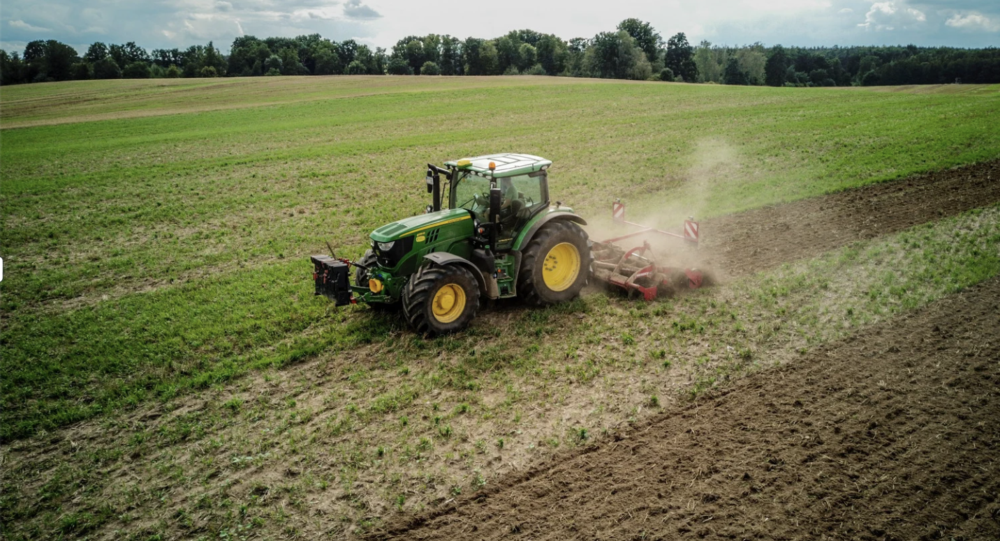

Founded in 2026, Growing Enterprise, Rooting Equity.
Across the vast stretch of Northern Nigeria, from the Sahelian dust of Sokoto and Katsina, through the guinea savanna of Kaduna and Kano, to the floodplains of Borno and the highlands of Adamawa the land has always depended on women. Long before the sun climbs over the millet fields, women are already awake: grinding grain, gathering firewood, and walking to farms that, in most cases, they will never legally own. They are the ones bent over the sorghum and groundnut rows through the dry harmattan winds and the short, unpredictable rains. They plant. They weed. They harvest. They process the shea, the moringa, the maize, the beans that feed households and markets from Maiduguri to Zamfara. Women make up close to seventy percent of Nigeria's agricultural workforce and are behind roughly eighty percent of the food that reaches Nigerian tables. And yet, when it is time to decide what is planted, when it is sold, or whose name is on the land, that voice, so often, is not hers. This is the contradiction Cultiva was born to answer.

Every program is designed with — not for — the communities we serve.
We use data, research, and field testing to guide every intervention.
We build systems that outlast our funding cycles and empower local ownership.
We prioritize women and youth in all our work.